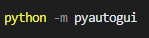
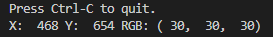
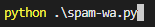
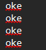
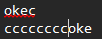

import pyautogui
import keyboard
import time
# GANTI koordinat sesuai hasil pencarian
x_pos = 1122 // contoh koordinat X
y_pos = 692 // contoh koordinat Y
print("automasi mulai dalam waktu 5 detik")
time.sleep(5) // Beri waktu 5 detik untuk mempersiapkan aplikasi chat
while not keyboard.is_pressed("c"): //Tekan tombol 'C' untuk menghentikan program
pyautogui.click(x=x_pos, y=y_pos)
pyautogui.typewrite("oke", interval=0.05) // 0.05 detik per karakter
time.sleep(1) // tunggu 1 detik
pyautogui.press("enter")